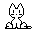
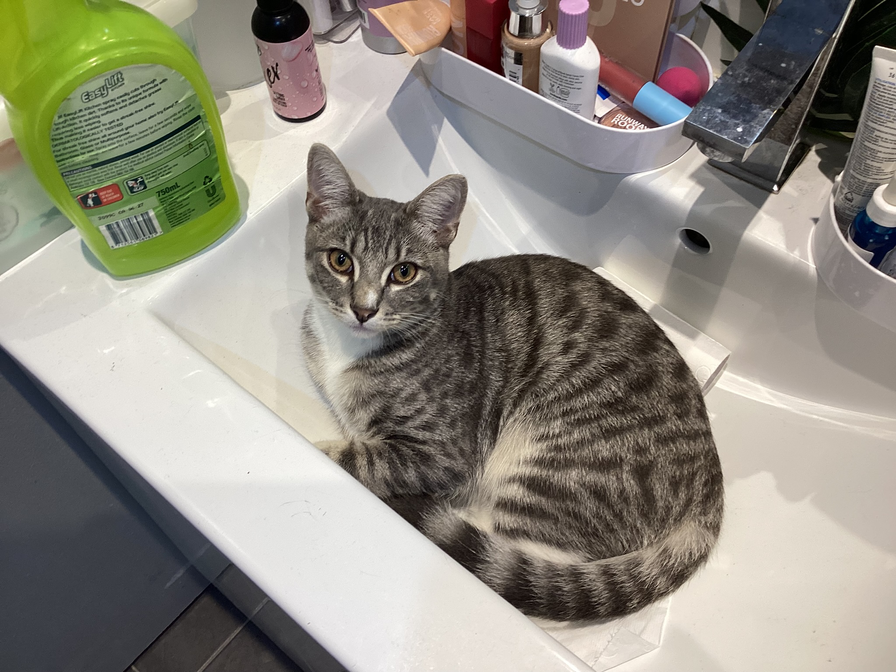

"©" 2026 Jay P.

Storm was adopted and taken home on my fourteenth birthday, with Storm being about two months old at the time. I had never owned a cat before, with my parents owning several cats previously. Storm's name was Earl Grey for a day before we changed it to Storm, and he was originally named Bubble at the RSPCA.

"©" 2026 Jay P.